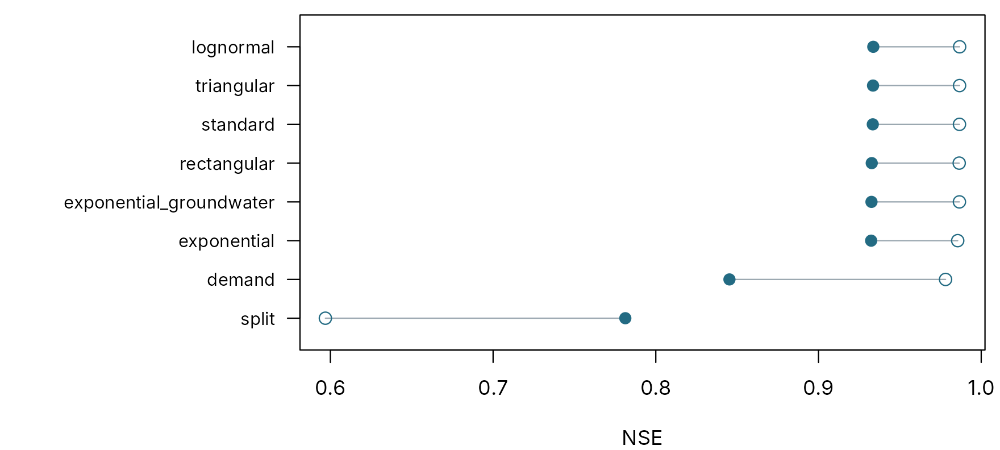

Choosing a model structure
pdmS7 documentation
Source:vignettes/choosing-structure.Rmd
choosing-structure.RmdThe structure of a model, its soil store, recharge rule and routing,
is a modelling decision like any other, and a reviewer may ask why this
one. “It is the standard” is an answer; “we calibrated the alternatives
alike and this one did best on data the calibration never saw” is a
better one. compare_structures() gives that answer, and
logs it.
This article compares eight structures on a synthetic catchment whose true structure is known, then carries the chosen one through validation and a final test. The component guide explains what each structure does.
The catchment
The “true” catchment has a lognormal soil store. The calibrator is not told.
set.seed(11)
n <- 24 * 75
time <- seq(as.POSIXct("2023-10-01", tz = "UTC"), by = 3600, length.out = n)
forcing <- data.frame(
time = time, pet = 0.06,
rain = ifelse(stats::runif(n) < 0.07, stats::rgamma(n, 0.7, scale = 3), 0)
)
truth <- structure_set("lognormal")$lognormal
truth$area_km2 <- 60
truth$fc <- 1.1
truth$distribution$meanlog <- 4.8
truth$distribution$sdlog <- 0.5
truth$recharge$kg <- 120
truth$surface$k1 <- 3
truth$surface$k2 <- 10
observed <- run_pdm(pdm_from_config(truth), forcing)$output$q_m3s *
exp(stats::rnorm(n, 0, 0.04))The project registers three windows: calibration, validation, and a
final test window. Ranking structures on the validation
window uses it up as an independent check, so the test window is kept
back, scored once, at the end, by nothing but
test_candidate().
options(pdmS7.user = "Ann Hydrologist", pdmS7.role = "custodian")
project <- file.path(tempdir(), "structure-choice")
start_calibration_project(project, catchment = "Example Brook", gauge = "99002",
purpose = "Structure selection", area_km2 = 60,
owner = "Deputy Director", steward = "Sam Steward")
reg <- register_data(project, forcing, observed,
calibration = c("2023-10-08", "2023-11-20"),
validation = c("2023-11-21", "2023-12-05"),
test = c("2023-12-06", "2023-12-14"))The candidates
structure_set() gives the standard PDM and seven
variants, each one change from it, so each comparison answers one
question.
structures <- structure_set()
data.frame(
structure = names(structures),
soil = vapply(structures, function(s) s$distribution$type, ""),
recharge = vapply(structures, function(s) s$recharge$type, ""),
groundwater = vapply(structures, function(s) s$groundwater$type, ""),
row.names = NULL
)
#> structure soil recharge groundwater
#> 1 standard pareto standard cubic
#> 2 rectangular rectangular standard cubic
#> 3 triangular triangular standard cubic
#> 4 exponential exponential standard cubic
#> 5 lognormal lognormal standard cubic
#> 6 split pareto split cubic
#> 7 demand pareto demand cubic
#> 8 exponential_groundwater pareto standard exponentialEach structure calibrates the parameters of its own components, within bounds from a table shipped with the package. Parameters that span orders of magnitude are searched on a log scale, so that a recharge constant of 10 hours gets as much attention as one of 1,000.
calibration_bounds(structures$lognormal)[, c("path", "lower", "upper", "scale")]
#> path lower upper scale
#> 1 fc 0.6 1.6e+00 linear
#> 2 distribution.meanlog 2.3 6.0e+00 linear
#> 3 distribution.sdlog 0.1 2.0e+00 linear
#> 4 recharge.kg 1.0 5.0e+03 log
#> 5 surface.k1 0.5 7.2e+01 log
#> 6 surface.k2 0.5 7.2e+01 log
#> 7 groundwater.kb 100.0 1.0e+06 logBounds can be overridden for a catchment you know, with
overrides, or a parameter held fixed with
exclude.
The comparison
Every structure gets the same objective, starts, seed and iteration
limit. With cores, the structures run in parallel; here
they run in turn.
elapsed <- system.time(
ranking <- compare_structures(project, structures, starts = 2, control = list(maxit = 30),
reasoning = "Which structure suits this catchment?")
)[["elapsed"]]
round(elapsed)
#> [1] 38
ranking[, .(rank, structure, parameters, calibration = round(calibration, 4),
validation = round(validation, 4), change = round(change, 4), starts_agree)]
#> rank structure parameters calibration validation change
#> <int> <char> <int> <num> <num> <num>
#> 1: 1 lognormal 7 0.9867 0.9337 -0.0531
#> 2: 2 triangular 6 0.9867 0.9335 -0.0532
#> 3: 3 standard 7 0.9866 0.9334 -0.0533
#> 4: 4 rectangular 6 0.9865 0.9327 -0.0538
#> 5: 5 exponential_groundwater 8 0.9866 0.9326 -0.0541
#> 6: 6 exponential 6 0.9856 0.9324 -0.0532
#> 7: 7 demand 9 0.9781 0.8453 -0.1328
#> 8: 8 split 7 0.5969 0.7813 0.1844
#> starts_agree
#> <lgcl>
#> 1: TRUE
#> 2: TRUE
#> 3: TRUE
#> 4: TRUE
#> 5: FALSE
#> 6: FALSE
#> 7: FALSE
#> 8: TRUE
k <- nrow(ranking)
par(mar = c(4, 12, 0.6, 0.6))
plot(NA, xlim = range(c(ranking$calibration, ranking$validation)), ylim = c(0.5, k + 0.5),
yaxt = "n", xlab = "NSE", ylab = "")
axis(2, at = k:1, labels = ranking$structure, las = 1, cex.axis = 0.85)
segments(ranking$calibration, k:1, ranking$validation, k:1, col = pal[7])
points(ranking$calibration, k:1, pch = 1, col = pal[1], cex = 1.3)
points(ranking$validation, k:1, pch = 16, col = pal[1], cex = 1.3)
Calibration (open) and validation (filled) NSE for each structure, best on validation at the top.
Reading the ranking
The true structure, lognormal, ranks first. But it would
be wrong to conclude much from that: 6 structures lie within 0.005 NSE
of it on validation, a spread of 0.0013. Over six weeks of autumn data
the soil stores never fill or empty far enough to tell their shapes
apart. A difference that small is a tie, not a result.
The recharge rule is another matter. demand and
split recharge lose clearly, on both windows: they move
water to groundwater in ways this catchment does not. That is a
conclusion the data do support.
Three things to read in any comparison:
- The spread at the top. Differences smaller than the noise between starts or between years are ties. Longer records, including a dry summer, separate soil stores; a few weeks cannot.
- The change from calibration to validation. A structure that gains in calibration and loses in validation is fitting noise with its extra parameters.
- Whether the starts agreed. Where they did not, as for exponential_groundwater, exponential, demand, the structure may have been under-calibrated; give it more starts or iterations before ruling it out.
Faced with a tie, prefer the simplest structure, the one with fewest parameters, among those within a stated margin of the best. Stating the margin in advance keeps the choice honest.
margin <- 0.005
tied <- ranking[validation >= ranking$validation[1] - margin]
choice <- tied[order(parameters, rank)][1]
choice[, .(structure, parameters, validation = round(validation, 4), calibration_entry)]
#> structure parameters validation calibration_entry
#> <char> <int> <num> <char>
#> 1: triangular 6 0.9335 0008Validation and the final test
The chosen calibration becomes the candidate, is validated, and then, with structure and parameters fixed, is tested once on the window nobody has looked at.
propose_candidate(project, entry = choice$calibration_entry,
reasoning = paste("Simplest structure within", margin,
"NSE of the best on validation."))
validate_candidate(project, "Validation as in the comparison.")
final <- test_candidate(project, "Final check on held-back data.")
round(c(calibration = final$calibration_scores$nse,
validation = final$validation_scores$nse, test = final$test_scores$nse), 4)
#> calibration validation test
#> 0.9867 0.9335 0.9209The test score is the honest estimate of how the chosen model will do on new data, because nothing was chosen with it. A Steward cannot sign off a project with a test window until the test has been run, and sees all three scores side by side in the report.
Cross-validation
With a short record, one validation window is a thin basis for a
ranking. cross_validate = TRUE also calibrates each
structure on the validation window and scores it on the calibration
window, and ranks on the mean of the two held-out scores. It doubles the
cost.
compare_structures(project, structures, starts = 4, cross_validate = TRUE, cores = 8,
reasoning = "Short record: rank on both held-out windows.")In the app and at scale
The app’s Structures tab runs the same comparison:
tick the structures, set the starts and cores, and press the button.
Every comparison is logged, structure_comparison() rebuilds
its ranking from the log at any time, and the report includes it.
Across many catchments, the question becomes which structure wins most often, and by how much. Combine this article with Calibrating many catchments:
winners <- vapply(folders, function(f) {
r <- compare_structures(f, structures, starts = 10, cores = 8, reasoning = "Benchmark")
r$structure[1]
}, character(1))
table(winners)